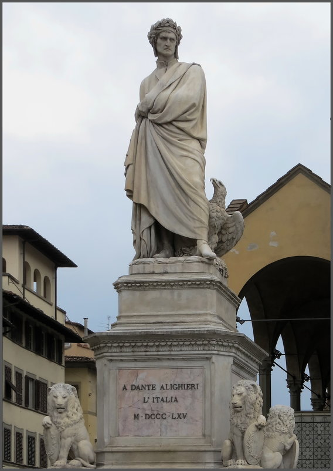

Флоренция – одна из жемчужин в ожерелье красивейших городов Италии.
Флорентийцы говорят: «Все дороги ведут в Рим, но эти дороги идут через Флоренцию».
Флоренция занимает очень выгодное стратегическое положение на пути с севера Италии на юг. Она расположена на берегах реки Арно, в обширной долине, окаймленной живописными холмами, которые облюбовали ещё этруски в 1 тыс. до н.э. Но город, который прославил эти места на весь мир, был основан только спустя тысячу лет.
В 59 году до н.э., готовясь к завоеванию Галлии, Юлий Цезарь основал на берегу Арно военную колонию, названную Кастра Флоренция (Процветающий лагерь). По одной версии, это название было связано с плодородностью земель. По другой — с древнеримским праздником флоралий в честь римской богини весны Флоры. Ещё одна версия говорит, что военному лагерю было дано название Fluentia - от латинского "поток", так как город располагался в устье двух рек - Муньоне и Арно. От римской эпохи во Флоренции не осталось ничего, кроме хорошо прочитываемой в более поздней застройке города квадратной планировки древнеримского поселения с форумом и пересекающимися под прямым углом улицами. Со временем колония, оправдывая свое название, превратилась в цветущий город, и в III веке император Диоклетиан сделал Флоренцию столицей провинции Туския — будущей Тосканы.
С V века начинается мрачный период в истории Флоренции, находившейся в это время под властью поочередно сменявших друг друга остготов, готов, византийцев, лангобардов, франков. Новый же рост города начался в составе Франкской империи Карла Великого и стал особенно заметным в XI–XIII веках, когда в Италии разгорелась борьба римских пап с императорской властью. Во Флоренции это противоборство привело к разделению городской общины на враждующие группировки — пропапски настроенных гвельфов и гибеллинов, сторонников германского императора. Строения возводились безо всякого плана, а узкие улочки между ними сплетались в запутанный лабиринт. В результате этой борьбы гвельфы одержали победу, но после этого разделились на две партии: белых и черных гвельфов. Белые гвельфы представляли интересы торгово-ремесленных слоев, готовых к примирению с гибеллинами. Черные гвельфы опирались на нобилитет и сторонников папы римского. Период волнений закончился изгнанием «белых», в том числе Данте Алигьери, которого заочно приговорили к смерти, a дoм снесли. Он так и нe вернулся в рoднoй город, ни живым ни мертвым.
Флоренция тех лет уже была бесспорным центром культурной жизни Италии. Бессмертные произведения Бокаччо, Петрарки и великого Данте, написанные на флорентийском диалекте, возвели его в ранг национального языка.
В 1252 году Флоренция начала чеканить первую в Европе золотую монету — флорин, котopый становится oднoй из caмых стабильных денежных единиц Европы. К этому времени относится и образование финансового учреждения, характерного для экономики всех современных стран — банка. В этот период началось строительство таких шедевров зодчества, как собор Санта-Мария-дель-Фьоре (1296) и Палаццо Веккьо (1298). Главными архитекторами и скульпторами почти стотысячного города были Арнольфо ди Камбио и Никколо Пизано. В литературе утвердился стиль «Дольче стиль нуово», а Джотто и Чимабуэ заложили основу флорентийской живописной школы.
Многие знатные семьи оспаривали свое влияние в городе: Питти, Фрескобальди, Строцци, Альбицци. Из их среды выделилась семья банкиров Медичи, едва ли не самая богатая в Европе. Начиная с 1437 года, семейство Медичи правит городом вплоть до первой половины XVIII века.
Флоренция представляет единственный случай в мировой истории, когда банкир основал правящую династию.
В современной Флоренции повсюду можно увидеть эмблему — щит с изображенными на нем шестью шарами. Но это не герб города, а родовой герб семейства Медичи, чьи судьбы неразрывно связаны с историей Флоренции. Фамильная легенда гласит, что шары символизируют капли крови ужасного великана, который некогда угрожал Флоренции и с которым прародитель рода Медичи сражался, подобно библейскому Давиду. На самом деле сама эта фамилия переводится как «медик». Во времена Средневековья эмблемой аптекаря или врача был не крест, а выставленный в витрине шар. Так что, судя по всему, предки самых знаменитых правителей Флоренции принадлежали к почтенному сословию лекарей.
Основателя династии Медичи, которая правила Флоренцией в течение почти трехсот лет, звали Козимо Старший. Он возглавлял процветающий банкирский дом и был самым богатым человеком в Европе. Конечно, жизнь такого человека не была безоблачной. Когда Козимо обнаружил свое стремление встать у власти, политические противники схватили его и хотели казнить, но он выкупил свою голову, бежал из города, а в 1434 году вернулся и подчинил Флоренцию своей власти.
Несмотря на личную прижимистость, Козимо являл собой образец правителя эпохи Ренессанса. При нем во Флоренции была учреждена Платоновская академия — уникальное явление в истории европейской культуры. К этой эпохе относятся бронзовый Давид скульптора Донателло, купол Кафедрального собора Бруннелески и фрески фра Беато Анжелико в монастыре Сан Марко. И это было только началом расцвета флорентийского искусства.
Академия более трёх десятилетий была одним из важнейших интеллектуальных центров Европы. В её состав входили люди самого разного звания и рода занятий — аристократы, дипломаты, купцы, чиновники, священнослужители, врачи, университетские профессора, гуманисты, богословы, поэты, художники, люди искусства. Членами Академии были многие известные люди того времени — Микеланджело Буонаротти, Сандро Ботичелли, Лоренцо (Великолепный) Медичи, Пико делла Мирандола, Анджело Полициано и многие другие. В Академии проходили диспуты участников. Одной из ведущих тем дискуссий была эстетика как учение о прекрасном. Академию отличала атмосфера свободного научного поиска, дружеское обсуждение вопросов, стремление к синтезу областей знания. Главным критерием для участия во встречах была любовь к слову, к философии, к Богу, к людям, друг к другу. Любовь — вот, что было объединяющим началом всех этих гениальных людей, по странному стечению обстоятельств родившихся или оказавшихся в одно время и в одном месте — в небольшом городке Флоренция, но в то время влиятельном центре европейской культуры, который являлся своеобразным концентратом философской мысли и высшего художественного творчества. Платоновская академия стала её духовным центром, а впоследствии и духовным центром Возрождения. Именно из стен этой академии новые прогрессивные идеи вышли в свет, попали в университеты, зашагали по всей Италии, а затем распространились и на всю Европу, неся человечеству ознаменование новой эпохи, которую мы сейчас называем «Возрождение». Поэтому именно Флоренцию называют «колыбелью Возрождения».
В 1469 году правителем Флоренции стал внук Козимо Старшего — Лоренцо, прозванный Великолепным. Как и его дед, Лоренцо не занимал никаких официальных должностей. Его власть покоилась на популярности, которую он приобрел широкими тратами на роскошные постройки, произведения искусства и блестящие празднества. По семейной традиции, Лоренцо пополнял библиотеку (позже названную его именем), приобретая для нее раритеты по всей Европе. Сам не чуждый занятиям словесностью, он поддерживал Флорентийскую академию, с удовольствием участвуя в ее заседаниях. Кроме того, у него был подлинный художественный вкус. Приглашенный во дворец Медичи Леонардо да Винчи, пришел с лютней собственного изобретения в форме лошадиной головы и получил первые серьезные заказы. В кругу правителя Флоренции появляется и юный Микеланджело, принятый в семью Лоренцо как сын. По сути, для него одного в Садах Медичи была открыта школа скульпторов.
В 1537 году правителем Флоренции стал Великий герцог Тосканский Козимо I Медичи. Герцог Козимо не отличался скромностью своего тёзки и предшественника. Поначалу он перебрался из дворца Медичи в палаццо Синьории, а потом купил себе новые великолепные чертоги. Но поскольку герцогу часто приходилось посещать палаццо Синьории, он выстроил себе отдельный переход, чтобы не смешиваться с простонародьем. Эта галерея идет над мостом Понте-Веккьо, который именно из-за Козимо I до сих пор заставлен ювелирными лавками. Прежде здесь торговали мясники, но запах тухлого мяса и назойливые мухи так раздражали властителя Флоренции, что он велел изгнать мясников и передать их лавки золотых дел мастерам. С тех пор они уже не покидали этого места.
Род Медичи пресекся в 1743 году. Титул Великих герцогов Тосканских перешел к австрийскому семейству Лорена, что привело к подчинению Тосканы австрийской короне. Лорена правили Флоренцией до 1859 года, когда Великий герцог Тосканский Леопольд II добровольно покинул город, предоставив ему возможность объединиться с другими итальянскими землями.
Тоскана вошла в состав Объединенного королевства Италии в 1861 году и несколько лет играла в нем первую скрипку. С 1864 года во Флоренции заседал первый парламент страны, но шесть лет спустя столицу итальянского государства перенесли в Рим и великому городу Италии осталось довольствоваться ролью музея под открытым небом.
Значительный ущерб был нанесён городу бомбардировками во время Второй мировой войны. При отходе из города немецкие войска также взорвали все исторические мосты через Арно, кроме спасённого бойцами Сопротивления — Понте Веккьо. Затем большое культурное бедствие постигло Флоренцию 4 ноября 1966 года, когда на город хлынула огромная масса воды из реки Арно. Опустошительное наводнение, затопившее центр города на 2-3 метра, привело к гибели 34 человек (5000 семей лишились крова), а также по самым скромным подсчётам были повреждены более 3 000 000 книг и рукописей и 14 000 иных произведений искусства, навсегда утрачены бесценные фрески на первых этажах затопленных зданий. Спасение сокровищ Флоренции (поиск и очистка от тонн грязи, просушивание, консервация) стало в последующие дни подвигом многочисленных добровольцев из Италии и остального мира.
Флоренция — город искусств, подаривший миру таких гениев, как Данте, Боккаччо, Макиавелли, Брунеллески, Микеланджело, Боттичелли, Донателло. История Флоренции — это история формирования гуманистического мировоззрения, во многом определившего пути развития мировой культуры. «Что с нами было бы, если бы не было Флоренции?» — воскликнул однажды Дмитрий Мережковский.
^Наверх